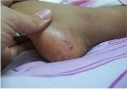

5 things to know about rattle snake and their babies
UA College of phaarmacy | Aug 6 2014
Rabies is a viral disease that causes encephalitis in humans and other mammals. It was historically referred to as hydrophobia ("fear of water") due to the symptom of panic when presented with liquids to drink. Early symptoms can include fever and tingling at the site of exposure.
Rabies is a viral disease that causes encephalitis in humans and other mammals. It was historically referred to as hydrophobia ("fear of water") due to the symptom of panic when presented with liquids to drink. Early symptoms can include fever and tingling at the site of exposure.
Rabies is a viral disease that causes encephalitis in humans and other mammals. It was historically referred to as hydrophobia ("fear of water") due to the symptom of panic when presented with liquids to drink. Early symptoms can include fever and tingling at the site of exposure.
Rabies is a viral disease that causes encephalitis
in humans and other mammals.[1] It was historically referred to as hydrophobia ("fear of water") due to the symptom of panic when presented with liquids to drink. Early symptoms can include fever and tingling at the site of exposure.
These symptoms are followed by one or more of the following symptoms: nausea, vomiting, violent movements,